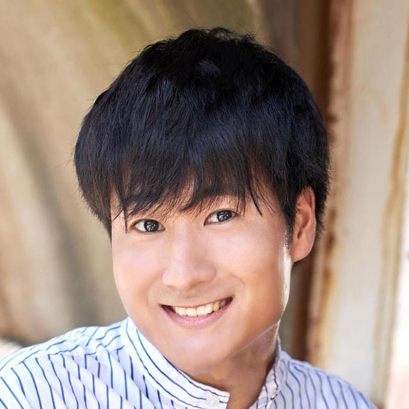

【声マガ・インタビュー】広瀬 裕也
TOPICS
PROFILE
アーツビジョンに所属する広瀬裕也さんは、千葉県出身の4月9日生まれ。『SSSS.GRIDMAN』（響裕太役）、『荒ぶる季節の乙女どもよ』（天城駿役）、『はんだくん』（相沢順一役）等に出演。2019年10月放送の『戦×恋（ヴァルラヴ）』では、主人公・亜久津拓真役で出演。
大学を卒業し、声優をめざす前から夢見ていた保育士の資格を取得した広瀬さん。「事務所や大学の先生など、いろいろな方々の力を借りて、一つの目標を達成できました！」と喜びを語ります。さらに、「声優としてがんばる一方で、投げ出さずに、目標を達成できたことは自信にもつながっています」とも。子どもが好きで保育士をめざしただけに、現在は「子供向けの番組に出たい」という新たな夢も抱いています。そんな広瀬さんに、声優をめざしたきっかけや日本ナレーション演技研究所（以下、日ナレ）で学んだこと、今後の目標について語っていただきました。
高校入学と同時に日ナレに入所
声優という仕事を意識したのはいつ頃ですか？
中学2年の時に観たアニメ『CLANNAD』がきっかけでした。それまでは、あまりアニメを観ることはなかったし、漫画や本もあまり読まなかったので、作品に感動して涙を流すという経験がなかったのですが、『CLANNAD』には衝撃を受けるくらい、すごく心を動かされて。それからアニメってこんなに面白いんだと思って観るようになって、次第に声優を意識するようになりました。
では、声優をめざしたきっかけを教えてください。
歌を歌うことが好きで、お芝居にもちょっと興味があったので、声優はその両方ができる仕事だと知って、めざしたいと思いました。それで親に相談したら、「高校に受かったら養成所に通っていい」と言われて、高校入学と同時に日ナレに入所しました。
とても早い決断でしたね。
もともと、やりたいことや気になることがあると、すぐに挑戦したくなる性格なんです。小学生の時は、水泳をやったり、空手をやったり、サッカーをやったり、陸上をやったり。中学ではテニスをやって、高校では立候補して生徒会長をやって、バンドのボーカルもやって。興味がなくなったらもういいやってすぐにやめちゃうタイプなんですけど（笑）。声優も、養成所に通ったからといってすぐになれるわけではないことはわかっていたので、とにかく、どういうものか知ってみたいし、学んでみたいと思ったんです。
日ナレを選んだ理由を教えてください。
声優養成所で検索して、最初に出てきたのが日ナレでした。レッスンが週1回で、高校に通いながら行くことができるのが、一番大きな決め手でした。
入所した頃の日ナレの印象について教えてください。
15歳でまだ社会経験が全くないし、都内に来ることもほとんどなかったので、最初は怖くて、父と一緒に行きました（笑）。通い始めてからは、すべてが新鮮でドキドキで、楽しかったです。高校に通っているだけでは知り合えない幅広い年齢層の方々と同じクラスで関われることも楽しかったし、興味があったもののまったく経験がなかったお芝居を一から学べたこともとても楽しかったです。
基礎科で印象に残っていることはありますか？
発声やかつ舌の練習でよく使われる「外郎売り」という題材があるんですが、ある日、講師の方に「覚えてきた人」と聞かれて、いつもみんな手を挙げるし、僕自身、どんな時でもとにかく手を挙げておいたほうがいいと思っていたので、覚えてないのに「はい！」って手を挙げたんです。そしたら、僕しか手を挙げてなくて、みんなの前に立ったものの、最初の「拙者」しか言えなくて、「なんで手を挙げたんだ！」って言われてしまって（苦笑）。それからは、次のレッスンまでの1週間、課題はもちろん、レッスンの時間にきちんと自分がやってきたことを発表して見てもらえるよう、取り組むようになりました。
本科では舞台形式のレッスンが中心になると思うのですが、いかがでしたか？
身体を使って表現をすることは難しかったけど、学ぶことがレベルアップしていくし、講師が変わり、クラスのメンバーも変わって、またいろいろな人と出会えて、とても面白かったです。
研修科はいかがでしたか？
講師の方が、クラス全体をチームのようにまとめてくださったので、修了した時は、みんなで寂しくて泣いてしまったくらい楽しかったです。今でもみんなで一緒にご飯を食べに行ったりしているんですが、それくらい深い関係性を築けたのは、日ナレで一緒に学んだからだと思います。お芝居は真剣にぶつかっていかないといいものができません。それを一緒にやってきたからこそ、気兼ねなく話せる関係性や、今も続く絆が築けたんだと思うんです。お芝居のクオリティーはまだまだ低かったかもしれないけど、自分たちの中では、納得がいく充実した時間を過ごせたのではないかと思っています。
高校に通いながら日ナレで学ぶ生活は、大変ではありませんでしたか？
まったく苦ではなかったですね。日ナレでは、年度を通して同じ曜日・時間に通うのですが、そのおかげで、生活のリズムがちゃんと作れていました。
基礎が何より大事だということをプロになって痛感
事務所に所属したのはいつですか。
本科の終わりに受けた所内オーディションに合格して、アーツビジョンに所属しました。
合格した時の気持ちを教えてください。
めちゃくちゃ嬉しかったです。基礎科の終わりに受けた所内オーディションで、最終審査で落ちてしまったんですが、生意気ながら、まだ1年しか学んでいないのに、最終審査までいけたことと落ちた悔しさがすごくモチベーションになりました。なので本科の1年間は、次のオーディションで受かることを目標に頑張りました。しかも自分が入りたかった事務所だったので、1週間くらいすごいハイテンションでした。
事務所に所属した後の生活サイクルを教えてください。
日ナレに通い始める前、保育士になるのが夢で、大学にも行きたいと考えていたんです。所属してからもその希望は叶えたくて、事務所に相談したら、僕の気持ちを尊重して応援してくれました。大学は指定校推薦だったので、受験勉強はしないで済んだのですが、大学に入ってからも、高校時代同様、事務所は学業優先で考えてくれました。教育系の学部は3週間の実習があったりして大変なのですが、スケジュールを調整してくださり、本当に助かりました。
デビュー当時の作品で最も印象に残っているものを教えてください。
所属後、最初に名前のある役をいただいた、ゲームの『DYNAMIC CHORD』です。この作品は、その後アニメになって、ドラマCDになって、さらにダミーヘッドマイクとかニコニコ生放送とか、自分にとって初めてをいろいろ経験させてもらったので、とても思い入れの強い作品になりました。当時は、日ナレの研修科でマイク前に立つレッスンを受け始めたばかりだったので、まだ現場でわからないことがたくさんあったのですが、スタッフの方々がすごく優しくて、マイクの距離感とか初歩的なことから全部教えてくださったことも印象に残っています。
昨年はアニメ『SSSS.GRIDMAN』で初の主演を務められましたね。
ずっと憧れていた、人を助けるヒーロー役で、しかも大きな作品の主演ということで、決まった時は、めちゃくちゃ嬉しかったです。大学の授業中に合格の連絡をもらったんですが、テンションが上がりすぎて、一人で学食で舞い上がって、チャイムが鳴ったことにも気づかずに、次の授業に遅刻して、先生に謝りに行ったものの、テンションは上がりっぱなしでした（笑）。
今までの収録で苦労した経験はありますか？
早朝から終電前までという長尺の現場を初めて経験した時は、朝からずっと叫んだりしていて、この仕事って体力勝負だなと感じました。ただ、先輩方は、自分より全然、セリフが多いのに、朝から最後までずっとパフォーマンスが変わらなくて、やっぱり素晴らしいなって勉強になりました。
お仕事をするようになって、日ナレで学んだことが活きていると実感できることはありますか？
声優とは何かという初歩的なことから、技術面、精神面にいたるまで、教えていただいたこと全てが役に立っています。声優になりたくて養成所に通おうとする人の多くは、台本の見方や、マイク前に立つ時の動き方などを学びたいと思うかもしれません。しかし、それよりも、発声やかつ舌、身体の使い方など、基礎が何より大事だということをプロになって痛感しました。これから通う人にも、それらを真剣に学んでほしいと思いますね。レッスンの前にストレッチをしたことも、今、身をもって大切なことだと感じているので、朝の現場では必ずやっています。
経験のすべてが演技に活きると思う
ご自身の考える声優の仕事の魅力について教えてください。
ヒーローなど自分が憧れていたキャラクターになれることはもちろん、ものすごく残虐な人にも、人間じゃない何かにもなれるところですね。絵や音楽の力に助けられながらも、本気でそれらになりきった時、本当にそういうキャラクターが実在するかのように見える。それができるのは声優ならではだと思います。まだまだ足りていないと思うことは多いし、一つできたら、また新たな課題が見つかって、毎日が研究研究で終わりがないですが、それもこの仕事の魅力だと思います。あと、顔出しの仕事や、歌、ラジオの仕事など、マルチに活動できることも僕にとって魅力です。
今後、どんな声優になりたいか教えてください。
「どんな役をやりたいですか？」とよく聞かれるんですが、根本にあるのはアニメの主役をやりたいという気持ちです。物語のキーになる役を演じられる声優でありたいですね。あと、歌もやりたいし、ラジオもやりたいので、そういう自分がやりたいことをできる人間でいられるように、日々、努力を重ねていきたいと思います。歌に関しては、キャラクターとして歌うことはもちろん、広瀬裕也として歌う機会も実現できたらいいですね。あとは、正直、売れたいですね（笑）。「声を使った仕事を毎日していて忙しい」って胸を張れるくらいの存在になりたいです。それで、いくつになっても、やりたいことに貪欲に、この仕事に関わっていたいです。
最後に声優をめざしている読者へメッセージをお願いします。
まず、日ナレに通う人には3時間というレッスンの時間を有意義に使うために、次のレッスンまでの1週間で何ができるか、レッスン以外の時間をどう使うかを考えたほうがいいと伝えたいですね。演技の練習をしているだけでは表現者として見えてこないものもあります。美味しいものを食べたり、美しい景色を見たり、いろいろな人と会ったり、いろいろな経験を積むことで、パフォーマンスはめちゃくちゃ変わってくると思います。経験は全部活かされるので、プライベートも充実させて、頑張ってください。
プロフィール
広瀬 裕也
- 所属事務所
- アーツビジョン
主な出演歴
- 戦×恋（ヴァルラヴ）（亜久津拓真）
- 荒ぶる季節の乙女どもよ。（天城駿）
- SSSS.GRIDMAN（響裕太）



{kind=link}
{kind=link}
{kind=link}
{kind=link}
{kind=link}
{kind=link}